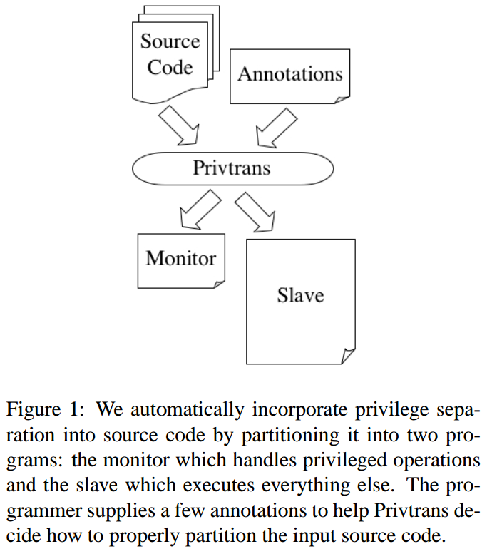
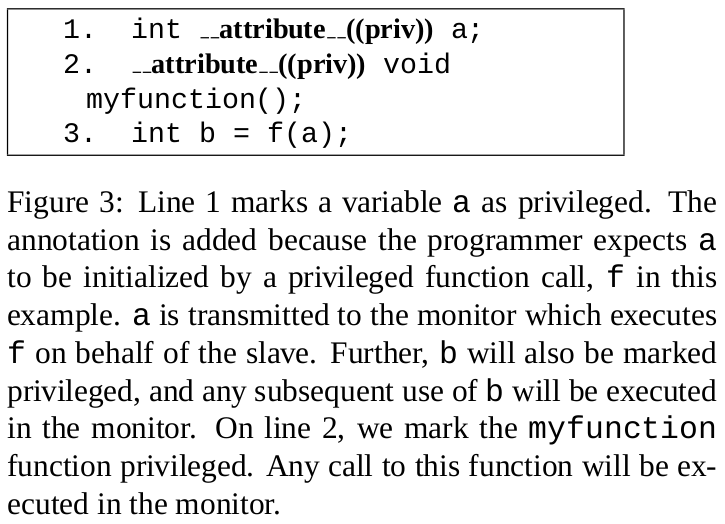
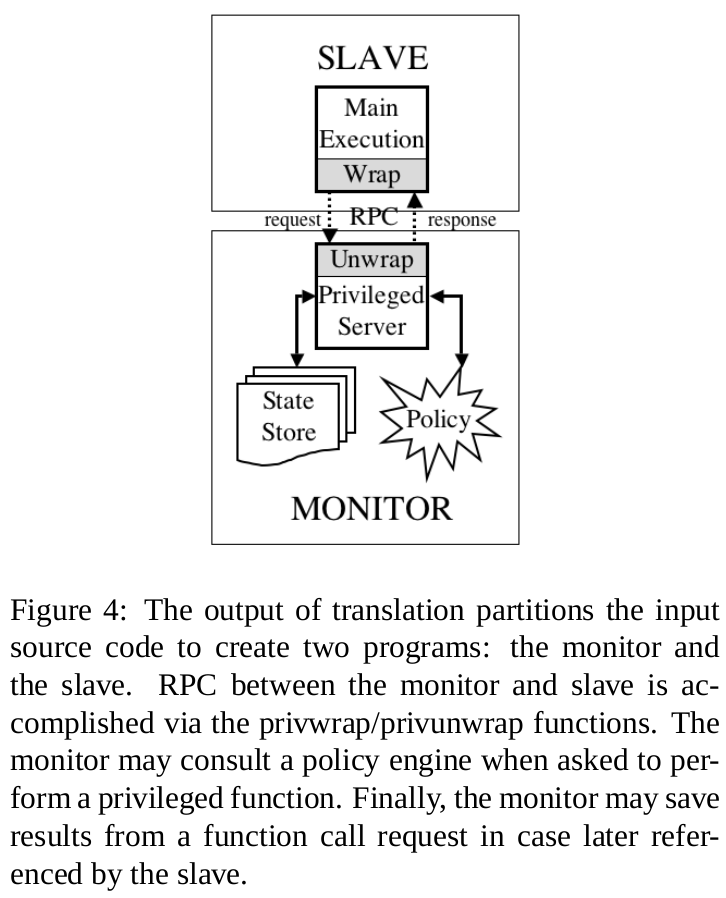
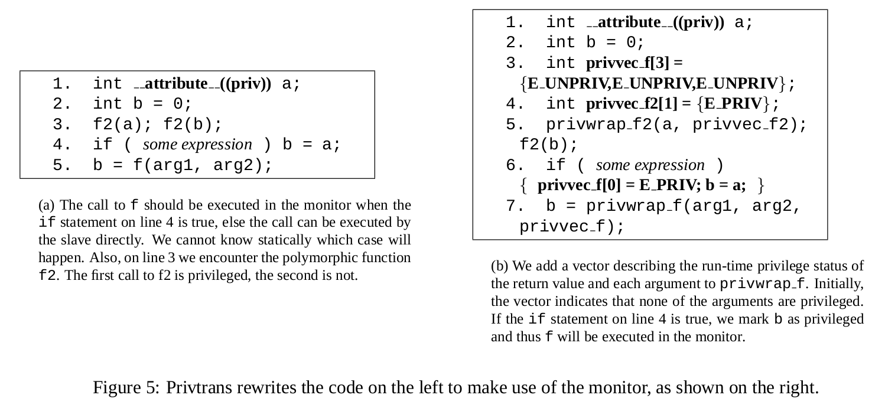

References:
Privtrans @ 2004SP1;
Privilege separation in OpenSSH2;
Partition a single program into two parts:
What kind of static analysis techniques are used?
What kind of dynamic analysis techniques are used?
How to determine bounds of domain?
How to define the interfaces between domains?
Programmer annotations. Indicates privileged operations using attributes.
Inter-procedural static analysis.
C-to-C translation. Partition the input source code into two programs: the monitor and the slave.
Monitor-slave interface
Allow finer-grained policies than access control.

Annotations: Two C type qualifier3:

Policies: A monitor policy. Specifies what operations the slave can ask the monitor to perform.
FSM call policy: - remove edges that do not lead to privileged call; got a a collapsed FSM, a directed graph of valid privileged call sequences; - FSM saved to file; read by monitor during initialization. - Requests from slave are checked against the FSM: a call is allowed only if there is an edge from the proceeding call to the current call in the FSM.
PDA to limit FSM:
PDA related work to limit the call sequences: MOPS 4, malicious call stream detection5, CIL6, Enforceable security policies7, 1999SP 8, and Automatic extraction of OO interfaces9.
???Easier to write more precise policy than system-call interposition: “In system call interposition, a model is needed for both privileged and unprivileged system calls. The policy in system call interposition is usually more complex as the number of system call increases. Privilege separation limites the number of privileged operations to only the interface exported by the monitor, which may reduce the complexity of the resulting policy.” ???
Downgrading data: allow privileged data to flow from the monitor to the slave.
Example: reading a file contain public/private key pair; file is privileged, private key is privileged, but public key can flow out.
Overview:

Attribute propagation
Call to the monitor: The slave calls privwrap: the interface provided for slave to call the monitor; 1) marshaling the arguments; 2)sending arguments, along with a vector describing the run-time privileged status of each variable, to the monitor; 3) waiting for the monitor to respond; 4) demarshaling any results; 5) return proper results to the slave;
Execution and return to monitor: The monitor calls privunwrap : 1) demarshals the arguments received; 2) checks the policy to see if the call is allowed; 3) looks up any privileged actuals in its state store; 4) performs the function; 5) if result are marked as privileged, hashes the results to its state store and set the return value of the function to be the hash index; 6) marshals the return values and sends them back to the slave.
Starting the monitor: priv_init as the first instruction in main. It can optionally
it contacts an running monitor. ???
the slave waits for notification from the monitor about successful initialization.
-> Use CIL6 to read in and transform the source code.
-> Use interprocedural static analysis to locate all potentially privileged call sites.
priv attribute is added to a variable if it can be assigned to by another privileged variable over any path in the program.??? If an atrribute is missing, the slave will attempt a call without appropriate privileges, and the call will fail. (??? what if the attribute is not propagated to privileged function, and that function got called by slave directly?)
After propagation of attributes, we got a set of calls that potentially should be executed by the monitor.
-> Rewrites a call to f that may be privileged to the wrapper function privwrap_f. Then privwrap_f use RPC to ask the monitor to execution the f.
-> Insert run-time checks to limit the number of calls from the slave to the monitor.
-> privilege polymorphic functions: can somewhere/sometime be privileged, and somewhere/sometime not privileged.

If you could revise
the fundmental principles of
computer-system design
to improve security...
... what would you change?